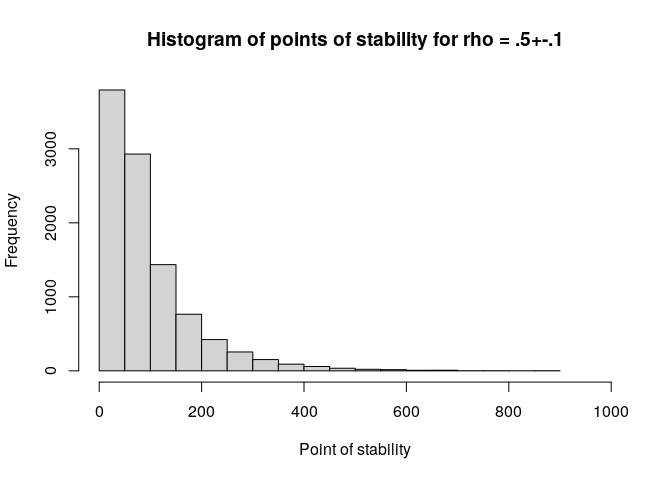

The R package fastpos provides a fast algorithm to calculate the required sample size for a Pearson correlation to stabilize within a sequential framework (Schönbrodt & Perugini, 2013, 2018). Basically, one wants to find the sample size at which one can be sure that percent of many studies will fall into a specified corridor of stability around an assumed population correlation and stay inside that corridor if more participants are added to the study. For instance, find out how many participants per study are required so that, out of 100k studies, 90% would fall into the region between .4 to .6 (a Pearson correlation) and not leave this region again when more participants are added (under the assumption that the population correlation is .5). This sample size is also referred to as the critical point of stability for the specific parameters.
This approach is related to the AO-method of sample size planning (e.g. Algina & Olejnik, 2003) and as such can be seen as an alternative to power analysis. Unlike AO, the concept of stability incorporates the idea of sequentially adding participants to a study. Although the approach is young, it has already attracted a lot of interest in the psychological research community, which is evident in over 800 citations of the original publication (Schönbrodt & Perugini, 2013). Still, to date, there exists no easy way to use the stability approach for individual sample size planning because there is no analytical solution to the problem and a simulation approach is computationally expensive with . The presented package overcomes this limitation by speeding up the calculation of correlations and achieving
. For typical parameters, the theoretical speedup should be at least around a factor of 250. An empirical benchmark for a typical scenario even shows a speedup of about 460, paving the way for a wider usage of the stability approach.
Installation
You can install the released version of fastpos from CRAN with:
install.packages("fastpos")You can install the development version from GitHub with devtools:
devtools::install_github("johannes-titz/fastpos")Using fastpos
Since you have found this page, I assume you either want to (1) calculate the critical point of stability for your own study or (2) explore the method in general. If this is the case, read on and you should find what you are looking for. Let us first load the package and set a seed for reproducibility:
library(fastpos)
RNGkind("L'Ecuyer-CMRG")
set.seed(20220812)
parallel::mc.reset.stream()In most cases you will just need the function find_critical_pos which will give you the critical point of stability for your specific parameters.
Let us reproduce Schönbrodt and Perugini’s quite famous and oft-cited table of the critical points of stability for a precision of 0.1. We set the number of studies to 100k and use multicore support (only works under GNU/Linux) so that it runs fairly quickly.
n_cores <- parallel::detectCores()
find_critical_pos(rho = seq(.1, .7, .1), sample_size_max = 1e3,
n_studies = 1e5, n_cores = n_cores)
#> Warning in find_critical_pos(rho = seq(0.1, 0.7, 0.1), sample_size_max = 1000, :
#> 448 simulation[s] did not reach the corridor of stability.
#> Increase sample_size_max and rerun the simulation.
#> rho_pop pos.80% pos.90% pos.95% sample_size_min sample_size_max lower_limit
#> 1 0.1 257.0 362 478 20 1000 0.0
#> 2 0.2 244.2 355 467 20 1000 0.1
#> 3 0.3 213.0 306 403 20 1000 0.2
#> 4 0.4 182.0 265 352 20 1000 0.3
#> 5 0.5 142.0 217 288 20 1000 0.4
#> 6 0.6 108.0 159 209 20 1000 0.5
#> 7 0.7 64.0 100 134 20 1000 0.6
#> upper_limit n_studies n_not_breached precision_absolute precision_relative
#> 1 0.2 1e+05 192 0.1 NA
#> 2 0.3 1e+05 192 0.1 NA
#> 3 0.4 1e+05 0 0.1 NA
#> 4 0.5 1e+05 64 0.1 NA
#> 5 0.6 1e+05 0 0.1 NA
#> 6 0.7 1e+05 0 0.1 NA
#> 7 0.8 1e+05 0 0.1 NAThe results are very close to Schönbrodt and Perugini’s table (see https://github.com/nicebread/corEvol). Note that a warning is shown, because in some simulations the corridor of stability was not reached. As long as this number is low, this should not affect the estimates much. But if you want to get more accurate estimates, then increase the maximum sample size.
If you want to dig deeper, you can have a look at the functions that find_critical_pos builds upon. simulate_pos is the workhorse of the package. It calls a C++ function to calculate correlations sequentially and it does this pretty quickly (but you know that already, right?). A rawish approach would be to create a population with create_pop and pass it to simulate_pos:
pop <- create_pop(0.5, 1e6)
pos <- simulate_pos(x_pop = pop[,1],
y_pop = pop[,2],
n_studies = 1e5,
sample_size_min = 20,
sample_size_max = 1e3,
replace = T,
lower_limit = 0.4,
upper_limit = 0.6,
progress = FALSE)
hist(pos, xlim = c(0, 1e3), xlab = c("Point of stability"),
main = "Histogram of points of stability for rho = .5+-.1")
Note that no warning message appears if the corridor is not reached, but instead an NA value is returned. Pay careful attention if you work with this function, and adjust the maximum sample size as needed.
create_pop creates the population matrix by using a method described on SO (https://stats.stackexchange.com/questions/15011/generate-a-random-variable-with-a-defined-correlation-to-an-existing-variables/15040#15040). This is a much simpler way than Schönbrodt and Perugini’s approach, but the results do not seem to differ. If you are interested in how population parameters (e.g. skewness) affect the point of stability, you should instead refer to the population generating functions in Schönbrodt and Perugini’s work.
Parallelization
Since version 0.4.0 fastpos supports multiple cores. My first attempts to implement this were quite unsuccessful because of several reasons: (1) Higher-level parallelism in R makes it difficult to show progress in C++, which is where the important and time-demanding calculations happen (2) some parallelizing solutions do not work on all operating systems (e.g. mcpbapply) (3) overhead can be quite large, especially for a small number of simulation runs.
I thought the best solution is is to directly parallelize in C++. I tried to do it with RcppThread, but in the end this was even slower than singlethreading. Maybe the overhead of setting up multiple threads outweighs sharing the work.
My intermediate solution was quite simple and pragmatic: to use futures. I divided the number of studies by the available cores , then started
simulations via futures in a multisession plan. Meanwhile the main R process also started a simulation, which showed a progress bar in C++. All simulations ended at approximately the same time, the progress bar finished and the futures resolved. The points of stability were combined and the rest of the program worked as for the singlethreaded version.
Unfortunately this solution did not bring any substantial speed benefits. Since version 0.5.0 I switched to the parallel package and pbmclapply. This means there is no multicore support for Windows but the implementation is simple and shows clear speed benefits.
For small simulations there is no speed benefit because fastpos is already too fast:
n_cores <- parallel::detectCores()
onecore <- function() {
find_critical_pos(0.5, n_studies = 1e4, progress = FALSE)
}
multicore <- function() {
find_critical_pos(0.5, n_studies = 1e4, n_cores = n_cores, progress = FALSE)
}
microbenchmark::microbenchmark(onecore(), multicore(), times = 10)
#> Unit: milliseconds
#> expr min lq mean median uq max neval
#> onecore() 790.5424 806.0623 880.9228 898.5692 914.1386 995.4131 10
#> multicore() 492.5743 507.3975 532.6609 519.9019 551.4526 617.7952 10Increasing the number of studies to 1,000,000 makes the speed benefit more visible:
onecore <- function() {
find_critical_pos(0.5, n_studies = 1e6, progress = FALSE)
}
multicore <- function() {
find_critical_pos(0.5, n_studies = 1e6, n_cores = n_cores, progress = FALSE)
}
microbenchmark::microbenchmark(onecore(), multicore(), times = 10)
#> Unit: seconds
#> expr min lq mean median uq max neval
#> onecore() 57.639320 58.015838 58.85051 58.97313 59.24430 60.16749 10
#> multicore() 9.254999 9.753195 11.80759 10.91989 11.91047 18.94043 10The maximum sample size also affects the speed benefit:
onecore <- function() {
find_critical_pos(0.5, n_studies = 1e4, sample_size_max = 1e4,
progress = FALSE)
}
multicore <- function() {
find_critical_pos(0.5, n_studies = 1e4, sample_size_max = 1e4,
n_cores = n_cores, progress = FALSE)
}
microbenchmark::microbenchmark(onecore(), multicore(), times = 10)
#> Unit: seconds
#> expr min lq mean median uq max neval
#> onecore() 5.578969 5.670123 5.740891 5.733023 5.820454 5.971168 10
#> multicore() 1.387514 1.411387 1.660138 1.444922 2.142137 2.184948 10Using more than around 10 cores does not seem to bring additional speed benefits:
cores <- function(n_cores) {
bquote(find_critical_pos(0.5, n_studies = 1e5, sample_size_max = 5e3,
n_cores = .(n_cores),
progress = FALSE))
}
function_list <- lapply(1:n_cores, cores)
names(function_list) <- 1:n_cores
mb <- microbenchmark::microbenchmark(list = function_list, times = 10,
unit = "s")
mb
#> Unit: seconds
#> expr min lq mean median uq max neval
#> 1 27.456555 27.570735 27.818499 27.745047 27.998901 28.552284 10
#> 2 14.386780 14.762170 14.799019 14.846158 14.891730 15.063332 10
#> 3 10.079521 10.272135 10.398187 10.449643 10.493651 10.690283 10
#> 4 7.786282 8.043653 8.123207 8.137474 8.174227 8.430836 10
#> 5 6.394230 6.457601 6.562601 6.559623 6.609138 6.833768 10
#> 6 5.493741 5.529108 5.677393 5.598711 5.857732 6.020727 10
#> 7 4.857490 4.957679 5.010991 5.000947 5.095433 5.150672 10
#> 8 4.501819 4.587342 4.653510 4.633522 4.721233 4.805759 10
#> 9 4.310806 4.513649 4.535217 4.531089 4.575051 4.703378 10
#> 10 4.302939 4.430716 4.556707 4.584788 4.648966 4.776502 10
#> 11 4.355230 4.508450 4.644879 4.641629 4.752381 5.003795 10
#> 12 4.141649 4.423738 4.629711 4.631150 4.817210 5.073758 10
#> 13 4.190796 4.631710 4.703205 4.683888 4.884239 4.962240 10
#> 14 4.389556 4.602093 4.745577 4.769075 4.890196 5.188714 10
#> 15 4.469471 4.506780 4.713059 4.686050 4.877884 5.059185 10
#> 16 4.172919 4.647434 4.666889 4.674721 4.853175 4.959688 10
#> 17 4.396954 4.569385 4.693250 4.604388 4.814465 5.140367 10
#> 18 4.448788 4.735557 4.902612 4.940298 5.105664 5.359574 10
#> 19 4.524529 4.860833 4.993857 4.930301 5.044446 5.557180 10
#> 20 4.903637 4.956342 5.144836 5.080159 5.318339 5.487320 10
#> 21 4.649297 4.967157 5.164920 5.219511 5.281292 5.579557 10
#> 22 4.590055 4.900174 5.218636 5.212350 5.616280 5.841419 10
#> 23 4.735541 5.040456 5.291030 5.239354 5.659753 5.688474 10
#> 24 4.634694 4.751584 5.039350 5.088603 5.243414 5.608231 10
#> 25 4.832792 5.021327 5.216380 5.202682 5.397915 5.566497 10
#> 26 4.510734 4.954355 5.111006 5.107665 5.315212 5.908580 10
#> 27 5.085392 5.151006 5.395888 5.369852 5.663524 5.772946 10
#> 28 4.883048 5.207972 5.294213 5.271934 5.550639 5.631980 10
#> 29 4.838274 5.086868 5.431193 5.409469 5.821201 5.960367 10
#> 30 4.970278 5.046102 5.434072 5.480559 5.805406 6.055113 10
#> 31 4.925469 5.105361 5.487184 5.509620 5.662650 6.186354 10
#> 32 5.014134 5.193149 5.376090 5.405113 5.561297 5.659123 10
plot(mb)
The test was done on a server with 32 cores. In general, the multicore support in fastpos is not perfect because the optimal split of work heavily depends on the specific parameters. In the future I hope to find a better way to implement multiple cores.
How fast is fastpos?
In the introduction I boldly claimed that fastpos is much faster than the original implementation of Schönbrodt and Perugini (corEvol). The theoretical argument goes as follows:
corEvol calculates every correlation from scratch. If we take the sum formula for the correlation coefficient
r_{xy} = \frac{n\sum x_i y_i - \sum x_i \sum y_i} {\sqrt{n\sum x_i^2-(\sum x_i)^2} \sqrt{n\sum y_i^2-(\sum y_i)^2}}
we can see that several sums are calculated, each consisting of adding up (the sample size) terms. This has to be done for every sample size from the minimum to the maximum one. Thus, the total number of added terms for one sum is:
\sum _{n_\mathrm{min}}^{n_\mathrm{max}}n = \sum_{n=1}^{n_\mathrm{max}}n - \sum_{n=1}^{n_\mathrm{min}-1}n = n_\mathrm{max}(n_\mathrm{max}+1)/2 -(n_\mathrm{min}-1)(n_\mathrm{min}-1+1)/2
On the other hand, fastpos calculates the correlation for the maximum sample size first. This requires to add numbers for one sum. Then it subtracts one value from this sum to find the correlation for the sample size
, which happens repeatedly until the minimum sample size is reached. Overall the total number of terms for one sum amounts to:
n_\mathrm{max}+n_\mathrm{max}-n_\mathrm{min}
The ratio between the two approaches is:
\frac{n_\mathrm{max}(n_\mathrm{max}+1)/2 -(n_\mathrm{min}-1)n_\mathrm{min}/2}{2n_\mathrm{max}-n_\mathrm{min}}
For the typically used of 1000 and
of 20, we can expect a speedup of about 250. This is only an approximation for several reasons. First, one can stop the process when the corridor is reached, which is done in fastpos but not in corEvol. Second, the main function of fastpos was written in C++ (via Rcpp), which is much faster than R. At the same time, the algorithms involve many more steps than just calculating correlations. For instance, setting up the population with a specific
takes some time since it usually consists of a million value pairs. The interface functions to setup the simulations also play an important role. Obviously, there is a lower time limit that cannot be beat. Thus, it is necessary to study the speed benefit empirically.
The theoretical difference is so big that it should suffice to give a rough benchmark for which the following parameters were chosen: rho = .1, sample_size_max = 1000, sample_size_min = 20, n_studies = 10000.
Note that corEvol was written as a script for a simulation study and thus cannot be simply called via a function. Furthermore, a simulation run takes a lot of time and thus it is not practical to run it too many times. If you want to experiment with the benchmark, I have forked the original corEvol repository and made a benchmark branch (note that this will only work on GNU/Linux, since here I am using git through the bash):
git -C corEvol pull || git clone --single-branch --branch benchmark \
https://github.com/johannes-titz/corEvolFor corEvol, two files are “sourced” for the benchmark. The first file generates the simulations and the second is for calculating the critical point of stability. I turned off all messages produced by these source files.
library(microbenchmark)
setwd("corEvol")
corevol <- function() {
source("01-simdata.R")
source("02-analyse.R")
}
fastpos <- function() {
find_critical_pos(rho = .1, sample_size_max = 1e3, n_studies = 10e3,
progress = FALSE)
}
bm <- microbenchmark(corevol = corevol(), fastpos = fastpos(), times = 10,
unit = "s")
bm
#> Unit: seconds
#> expr min lq mean median uq
#> corevol 363.2943526 365.8412867 366.8502931 366.7658715 367.2626313
#> fastpos 0.7604255 0.7855696 0.8164049 0.7999461 0.8071823
#> max neval
#> 371.6549927 10
#> 0.9890917 10For the chosen parameters, fastpos is about 460 times faster than corEvol, for which there are two main reasons: (1) fastpos is built around a C++ function via Rcpp and (2) this function does not calculate every calculation from scratch, but only calculates the difference between the correlation at sample size and
via the sum formula of the Pearson correlation (see above). There are some other factors that might play a role, but they cannot account for the large difference found. For instance, setting up a population takes quite long in corEvol (about 20s), but compared to the ~6 min required overall, this is only a small fraction. There are other parts of the corEvol code that are fated to be slow, but again, a speedup by a factor of 460 cannot be achieved by improving these parts. The presented benchmark is definitely not comprehensive, but only demonstrates that fastpos can be used with no significant waiting time for a typical scenario, while for corEvol this is not the case.
FAQ
What does fastpos do if the corridor of stability is not reached for a simulation study?
In this case fastpos will return an NA value for the point of stability. When calculating the quantiles, fastpos will use the maximum sample size, which is a more reasonable estimate than ignoring the specific simulation study altogether.
Why does fastpos produce different estimates to corEvol?
If the same parameters are used, the differences are rather small. In general, differences cannot be avoided entirely due to the random nature of the whole process. Even if the same algorithm is used, the estimates will vary slightly from run to run. The other more important aspect is how studies are treated where the point of stability is not reached: corEvol ignores them, while fastpos assumes that the corridor was reached at the maximum sample size. Thus, if the parameters are the same, fastpos will tend to produce larger estimates, which is more accurate (and more conservative). But note that if the corridor of stability is not reached, then you should increase the maximum sample size. Previously, this was not feasible due to the computational demands, but with fastpos it usually can be done.
Issues and Support
If you find any bugs, please use the issue tracker at:
https://github.com/johannes-titz/fastpos/issues
If you need answers on how to use the package, drop me an e-mail at johannes at titz.science or johannes.titz at gmail.com
Contributing
Comments and feedback of any kind are very welcome! I will thoroughly consider every suggestion on how to improve the code, the documentation, and the presented examples. Even minor things, such as suggestions for better wording or improving grammar in any part of the package, are more than welcome.
If you want to make a pull request, please check that you can still build the package without any errors, warnings, or notes. Overall, simply stick to the R packages book: https://r-pkgs.org/